観戦までの10ステップ
上から順に読めば、初めてでも観戦までの流れが分かります。
広島市までのアクセス
広島は大阪と福岡の間に位置している地方都市です。
広島駅は市街地にあり、マツダスタジアムにも近い駅です。
大阪や福岡から新幹線でアクセスできます。
新幹線の所要時間の目安です。列車・停車駅などによって異なります。
一方、広島空港は市街地から離れており、広島駅周辺までバスで約１時間かかります。
試合日程を確認
CHECK THE DATE試合日程は、カープ公式サイトのチームスケジュールで確認できます。マツダ スタジアム開催の試合は、日程表の球場欄に「マツダ」と表示されています。
プロ野球のシーズンは主に3月から10月です。平日はナイトゲームが多く、土日祝は春や秋はデーゲーム、夏はナイトゲームが多い傾向があります。
雨天中止や開始時間の変更は、カープ公式サイトのトップページで確認しましょう。雨予報でも、試合直前まで中止が発表されないことがあります。
SEASON
SEASON
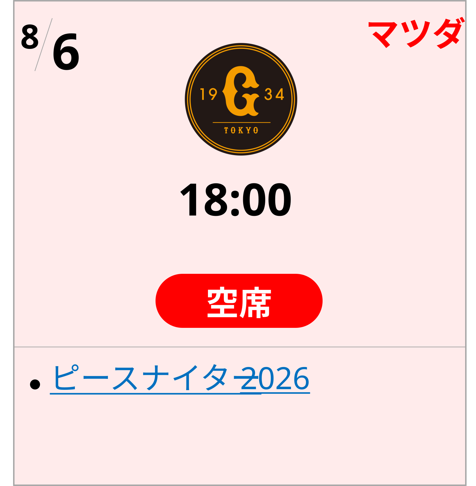
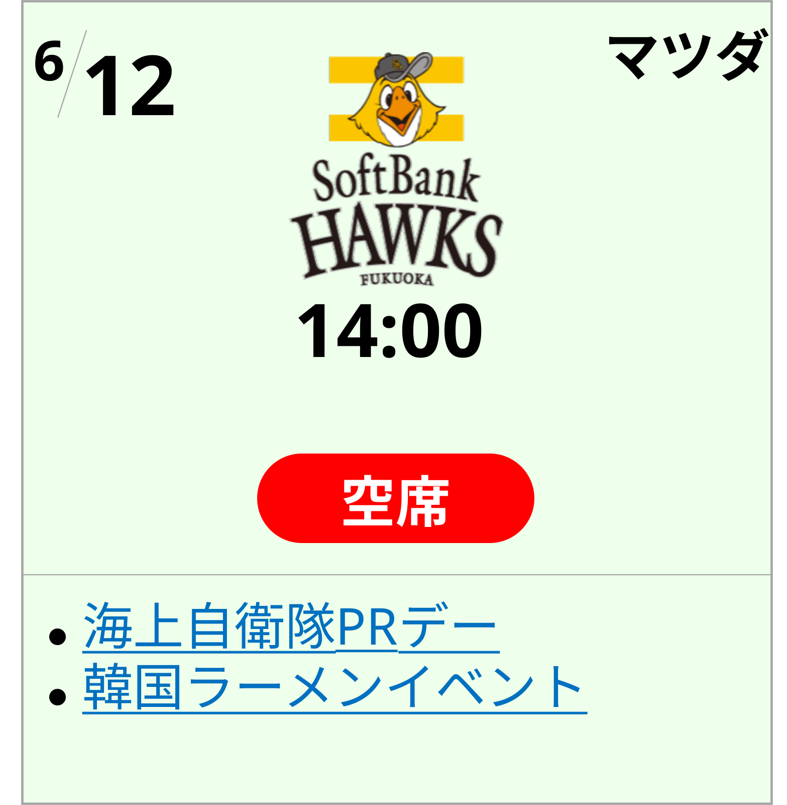
「マツダ」と記載されている試合は、マツダスタジアムで開催されます。
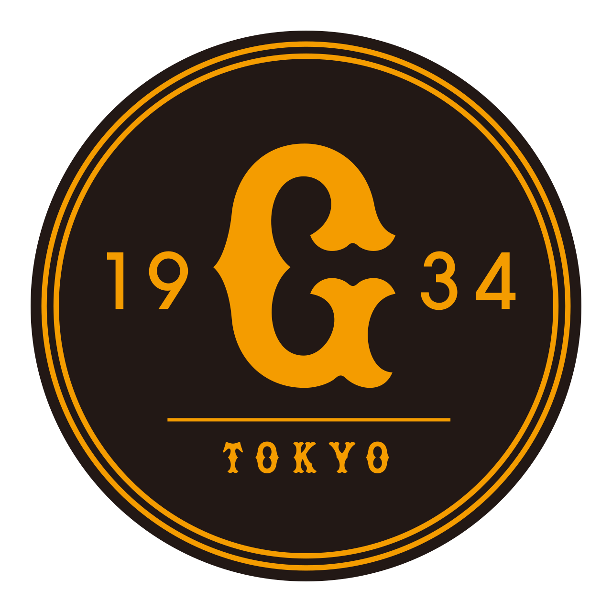
TOKYO YOMIURI GIANTS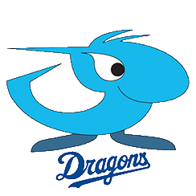
CHUNICHI DRAGONS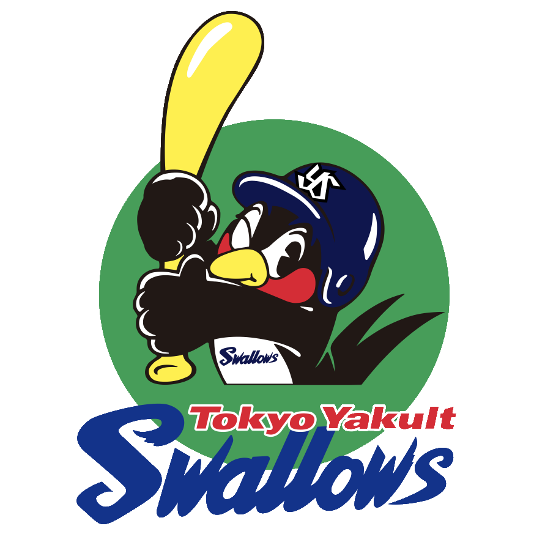
TOKYO YAKULT SWALLOWS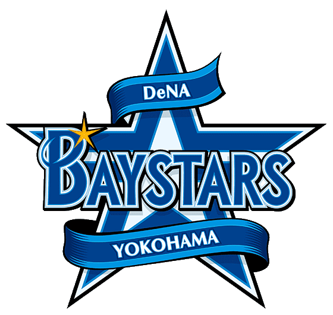
YOKOHAMA DeNA BAYSTERS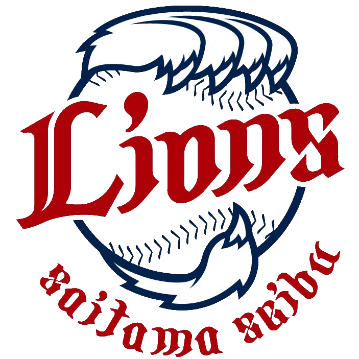
SAITAMA SEIBU LIONS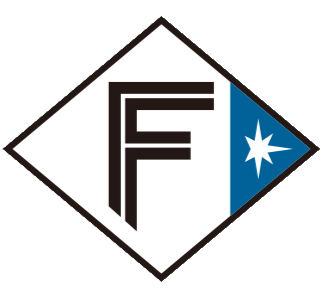
HOKKAIDO NIPPONHAM FIGHTERS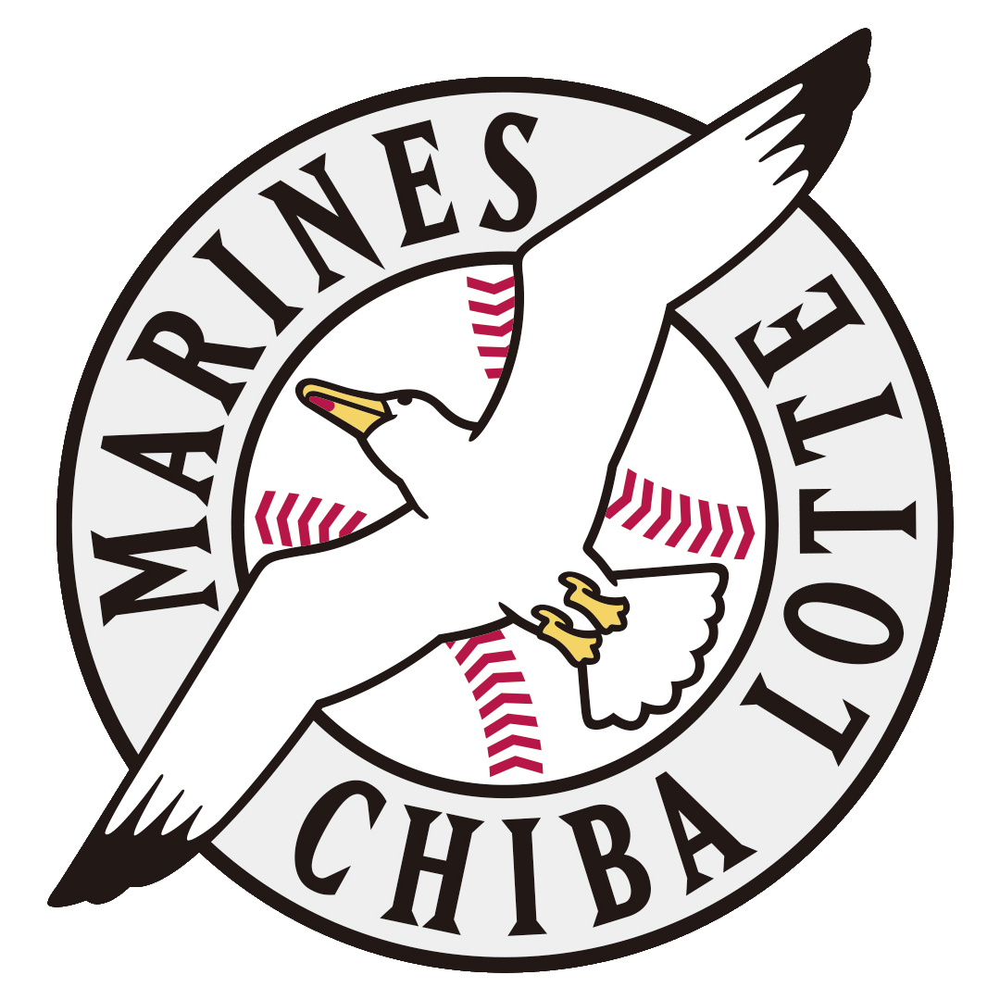
CHIBA LOTTE MARINES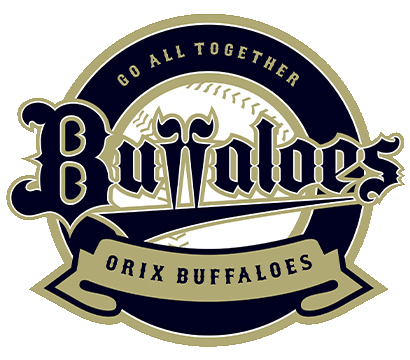
ORIX BUFFALOESチケットを購入
GET YOUR SEATチケットは、カープ公式ホームページ、マツダ スタジアム窓口、コンビニ・プレイガイドなどで購入できます。旅行前にオンラインで購入しておくと安心です。
PURCHASE METHODS
Online
Available 24/7
Available from outside Japan
Ease of purchase: Low
Convenience Stores
Available 24/7
Available only within Japan
Ease of purchase: High
Stadium Ticket Office
Business hours only
Available at the stadium ticket office
Ease of purchase: Medium
※販売条件や受付時間は、試合・座席・販売時期によって変わることがあります。購入前に公式情報を確認してください。
SEAT PRICE REFERENCE
Example ticket prices in JPY. Seat availability, sales conditions, and prices may change by game or season.
| Seat | Area | Level | Age / Notes | Price |
|---|---|---|---|---|
| Infield Reserved Seat A | Infield | 1st floor | Ages 4 and over: same price as adults | ¥4,200 |
| Outfield Reserved Seat | Outfield | 1st floor | Ages 4 and over: same price as adults | ¥2,500 |
| Sky Seat | Infield | Upper deck | Ages 4 and over: same price as adults | ¥3,300 |
| Carp Performance Seat | Outfield | Upper deck | Ages 4 and over: same price as adults | ¥2,100 |
| Visitor Performance Seat | Infield | Upper deck | Ages 4 and over: same price as adults | ¥2,100 |
| 3B Performance Seat | Infield | Upper deck | Ages 4 and over: same price as adults | ¥2,100 |
| Infield Reserved Seats | Infield | Upper deck | Ages 4 and over: same price as adults | ¥2,500 |
| Infield Unreserved Seat | Infield | Upper deck | Ages 16 and over | ¥1,900 |
| Infield Unreserved Seat | Infield | Upper deck | Ages 15 and under | ¥900 |
The color markers are a simple reference for the seat categories in this guide. Always check the official seat map and ticket page before purchasing.
空席があれば、当日券を球場窓口で購入できることもあります。座席を選ぶときは、「ビジター席」に注意してください。ビジター席は旅行者向けではなく、カープの対戦相手チームを応援する人のための席です。
応援エリア
応援エリア
詳しい座席位置・ルールは購入前に公式座席図を確認してください。
スタジアムへのアクセス
WALK FROM HIROSHIMA STATIONマツダ スタジアムの最寄り駅は広島駅。南口から徒歩約10〜15分でアクセスできます。
広島駅からスタジアムへ
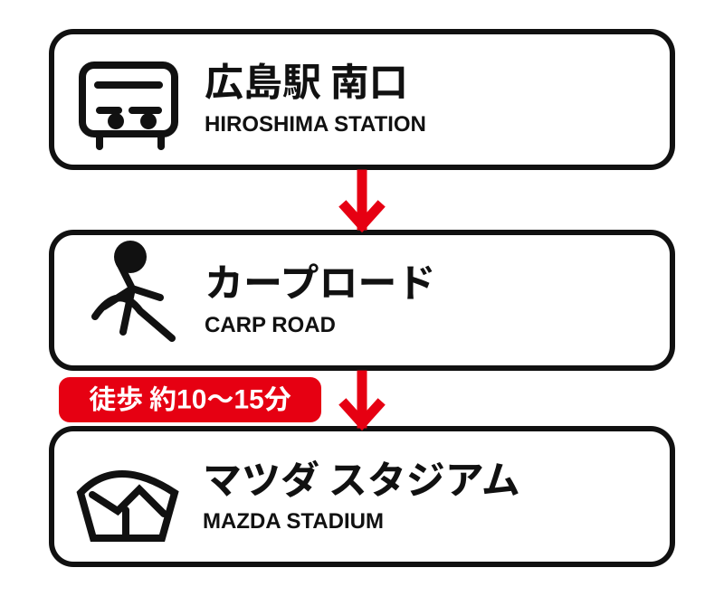
カープロードには、選手紹介パネル、球団の歴史を紹介するモニュメント、赤いローソン、赤い東横インなどの見どころがあります。
カープロードの見どころ
画像は仮のピクトグラムです。後日、写真に差し替えます。
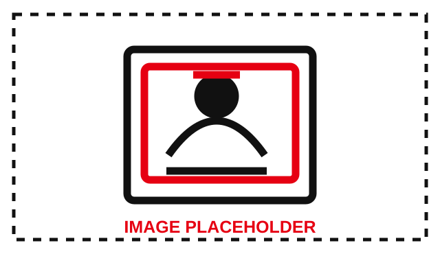
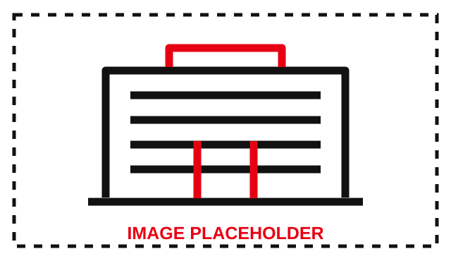
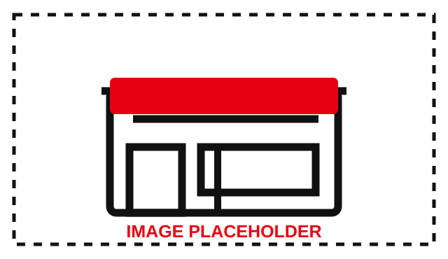
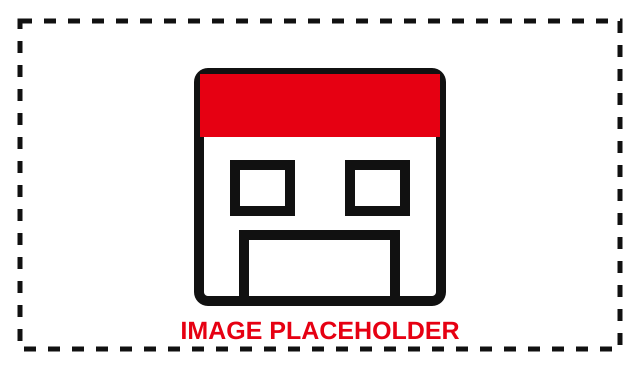
チケットを持っている場合は、プロムナードを上って入場ゲートへ向かいます。チケットの購入・窓口引換が必要な場合は、プロムナードを上らず、球場正面のチケット売場へ向かってください。
チケットの状態で進む方向が変わります
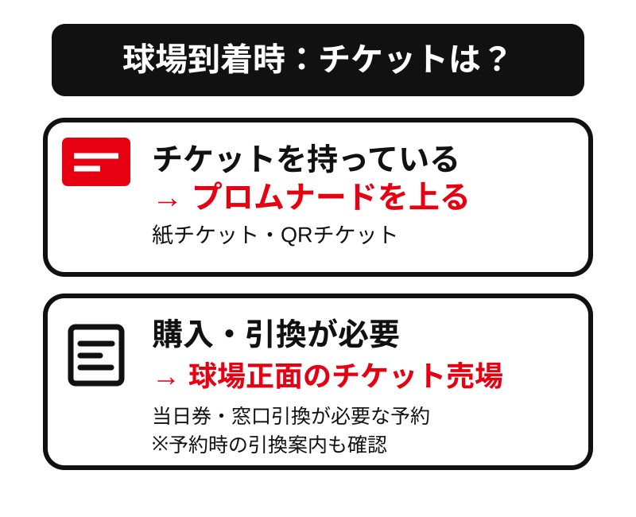
Google Maps
周辺のコンビニ
スタジアムルール
KNOW BEFORE YOU GOマツダ スタジアムでは、ビン・カン・ペットボトル類や危険物は持ち込めません。入場時には手荷物検査があります。
ビジターパフォーマンス席は、カープの対戦相手チームを応援する人のための席です。カープパフォーマンス席は、カープを応援する人のための席です。
再入場は可能ですが、外へ出る場合は再入場用の出口で手続きが必要です。
天気をチェック
OUTDOOR STADIUMマツダ スタジアムは屋外球場です。試合前には、天気予報と公式サイトのお知らせを確認しましょう。
夏は日差しと暑さが強く、春・秋のナイトゲームは肌寒くなることがあります。雨が予想される場合は、レインコートを用意すると安心です。
入場口
ENTER THE BALLPARKマツダ スタジアムには、正面ゲート、JR側ゲート、メインゲートの3つの入場ゲートがあります。席種に関わらず、どのゲートからでも入場できます。
入場時には、紙チケットまたはQRチケットが必要です。チケット提示の前に手荷物検査があるため、バッグの中を見せられるように準備しておきましょう。
一時退場する場合は、各出入口の再入場口で手続きが必要です。
位置関係のイメージです。実際の導線は現地案内も確認してください。
グッズ
WEAR THE REDカープグッズは、マツダ スタジアム内のショップや、広島駅周辺の販売店で購入できます。ユニフォーム、タオル、メガホン、風船など、観戦を楽しむためのグッズがそろっています。
試合前や試合終了後はショップが混みやすいため、ゆっくり選びたい場合は試合中に立ち寄るのがおすすめです。
ビジターパフォーマンス席ではカープグッズを使えず、カープパフォーマンス席では対戦相手チームのグッズを使えません。
ユニフォームは日本サイズなので、試着またはサイズ表の確認がおすすめです。
球場内のようす
MORE THAN BASEBALL球場内には、飲食店、売店、グッズショップ、トイレ、授乳室、喫煙所などがあります。購入した食べ物や飲み物は、座席で楽しめます。
座席の後ろにあるコンコースは一周でき、場所によってはグラウンドを見ながら歩くこともできます。早めに入場して、球場内を散策するのも観戦の楽しみのひとつです。
試合中のイベント
JOIN THE ENERGY試合前にはスターティングメンバー発表や始球式があり、試合中にはイニング間イベントや大型ビジョンでの映像演出が行われます。
カープの応援は主に攻撃中に行われます。応援歌を知らなくても、周囲に合わせて拍手や手拍子をするだけで楽しめます。
7回表終了後、カープの7回裏の攻撃前にはジェット風船を飛ばします。風船を使う場合は、球場で販売されている専用のものを購入してください。
帰り方
PLAN YOUR WAY HOME試合後は、多くの観客が徒歩で広島駅へ向かいます。行きより混雑するため、スタジアムから広島駅までは徒歩約15〜20分を見込んでおきましょう。
広島駅では在来線も混雑します。特に宮島口・岩国方面へ向かう列車は利用者が多いため、新幹線や電車の時間には余裕を持つことをおすすめします。
野球は終了時刻が決まっていません。延長戦などで試合が長引くこともあるため、最終電車や新幹線を利用する場合は注意してください。